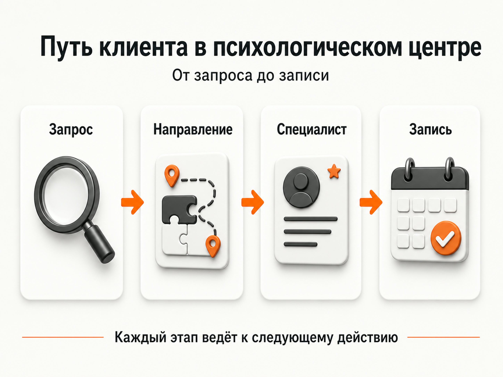
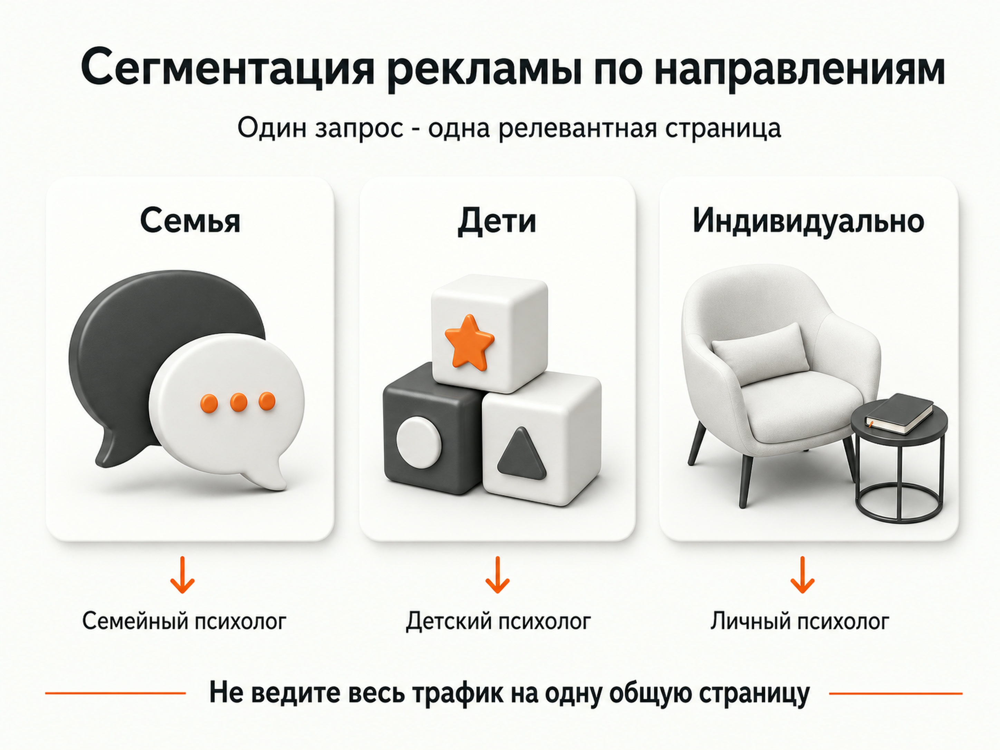
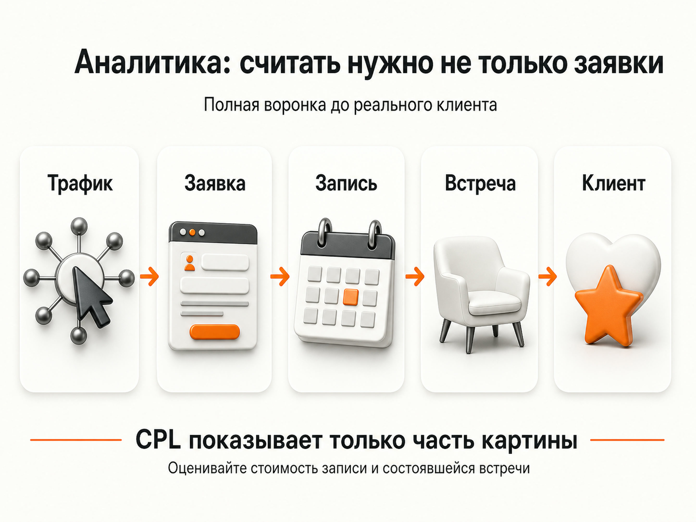

Блог о платном трафике
Продвижение психологического центра: как привлекать клиентов из поиска и рекламы
Продвижение психологического центра лучше строить не вокруг одного рекламного канала, а вокруг системы: отдельные страницы направлений и специалистов, поисковый трафик, Яндекс Директ, локальное продвижение, контент и аналитика до фактической записи.
У центра есть преимущество перед частным психологом - несколько специалистов и направлений позволяют работать с более широким спросом. Но есть и сложность: человеку нужно быстро понять, к кому обратиться именно с его ситуацией. Если сайт, реклама и запись этого не объясняют, часть трафика будет теряться еще до первого контакта.
С чего начинается продвижение психологического центра
Я бы начинал не с выбора рекламного кабинета, а со структуры услуг и спроса.
Например, в одном центре могут работать:
- семейные психологи;
- детские и подростковые психологи;
- специалисты по отношениям;
- специалисты по тревожным состояниям и стрессу;
- психологи для индивидуальной работы со взрослыми;
- специалисты по профессиональному выгоранию;
- психологи, работающие онлайн и очно.
Это разные потребности и часто разные поисковые запросы. Страница с общим заголовком «Психологический центр» плохо раскрывает их все одновременно.
Пользователь обычно ищет не абстрактную психологию. Он ищет специалиста, формат консультации или решение конкретной ситуации. Поэтому маркетинговая структура центра должна повторять структуру реального спроса.

Сайт психологического центра
Для продвижения нужен сайт, на котором человеку легко перейти от своей проблемы к подходящему специалисту.
Оптимальная структура обычно включает отдельные страницы основных направлений, страницы психологов, информацию о формате работы, стоимости, местоположении и записи.
На странице конкретной услуги желательно сразу отвечать на основные вопросы: с какими запросами работает специалист, как проходит первая встреча, сколько она длится, возможна ли работа онлайн, сколько стоит прием и как записаться.
Отдельные страницы психологов нужны не только для SEO. При выборе специалиста доверие играет большую роль, поэтому человеку полезно увидеть образование, специализацию, опыт, методы работы, фотографию и понятное описание подхода.
Если на сайте десять психологов, не стоит делать десять практически одинаковых страниц с заменой имени. У каждого специалиста должна быть своя специализация и собственное содержательное описание.
Многостраничный сайт и рекламные посадочные
Сайт, удобный для SEO, не всегда идеально подходит для платного трафика.
У меня был похожий пример в другой нише. Агентство недвижимости продвигало услугу trade-in через большой многостраничный сайт. Для органического поиска такая структура была полезна, но рекламный пользователь легко уходил на другие страницы и терял основное предложение. После перехода на более сфокусированную посадочную страницу основной поток обращений начал идти через квиз.
Это не психологическая тематика, поэтому переносить показатели проекта напрямую нельзя. Сам принцип универсален: рекламная страница должна максимально точно продолжать смысл объявления.
Подробнее - в кейсе «Агентство недвижимости, Trade-in».
SEO-продвижение психологического центра
Органический поиск особенно полезен центру с несколькими направлениями, потому что позволяет постепенно охватить большое количество конкретных запросов.
Я бы разделил SEO на три уровня.
Первый - коммерческие страницы. Это страницы направлений, специалистов и форматов приема.
Второй - локальный спрос. Если центр работает очно, на сайте должны быть корректно указаны адрес, контакты, часы работы, город и другая информация, которая помогает пользователю понять, где находится организация.
Третий - информационный спрос. Это статьи под реальные вопросы потенциальных клиентов.
Например, человек может сначала искать информацию о семейных конфликтах или эмоциональном выгорании, а уже после чтения решить обратиться к специалисту. В такой статье должна быть естественная ссылка на подходящее направление центра.
Контент не стоит создавать в формате сотен практически одинаковых SEO-текстов. Лучше подробно отвечать на реальные вопросы и связывать статьи с услугами и специалистами.
Для психологической тематики особенно важны понятное авторство материалов, информация о специалистах, аккуратные формулировки и отсутствие сомнительных обещаний. Это одновременно помогает пользователю оценить источник и повышает качество самого сайта.
Яндекс Карты и локальное продвижение
Для центра с очным приемом отдельным каналом становится локальный поиск.
Человек может искать психолога поблизости, сравнивать несколько организаций на карте, читать отзывы, смотреть фотографии и только после этого переходить на сайт или звонить.
Поэтому карточку организации имеет смысл заполнять так же внимательно, как сайт:
- корректные контакты и график;
- адрес и точка на карте;
- актуальные фотографии;
- перечень направлений;
- ссылка на сайт;
- информация об организации;
- ответы на отзывы.
Данные на сайте и в карточках организации не должны противоречить друг другу.
Для центра это особенно полезно, потому что один физический адрес объединяет сразу несколько специалистов и направлений.
Яндекс Директ для психологического центра
SEO требует времени, поэтому для получения спроса сразу обычно используют контекстную рекламу.
Основу я бы строил вокруг запросов с уже сформированным намерением обратиться за услугой: человек ищет психолога, конкретное направление или формат приема.
При этом не стоит объединять весь спрос в одну общую рекламную группу. Запрос человека, который ищет семейного психолога, должен вести на страницу семейной психологии. Запрос по детскому специалисту - на соответствующую страницу.
Слишком сильное дробление кампаний тоже бывает проблемой. Если у центра небольшое количество конверсий, десятки микрокампаний разделяют статистику и мешают алгоритмам нормально обучаться.
В моем кейсе с онлайн-фотошколой рекламная структура первоначально была раздроблена на множество небольших кампаний. После укрупнения структуры и концентрации статистики внутри нескольких крупных кампаний удалось масштабировать поток до 1500-2500 лидов в месяц при CPL 126 ₽ вместо 350+ ₽. Это другая ниша, но принцип работы алгоритмов применим и здесь: структуру нужно дробить по реальным различиям спроса, а не ради самого дробления.
Подробнее - в кейсе «Масштабирование фотошколы».

Модерация и аккуратные формулировки
Психологические услуги находятся на границе нескольких категорий, поэтому перед запуском важно определить, что именно оказывает центр и относится ли деятельность к медицинской.
Для медицинских услуг Яндекс устанавливает отдельные требования к рекламе и документам. Требования зависят от типа услуги и страны показа. Перед запуском медицинского направления нужно проверять актуальные правила модерации именно для конкретной услуги.
В чувствительных тематиках я в любом случае использую спокойную подачу без давления и чрезмерных обещаний.
Это хорошо видно в моем кейсе с Telegram Ads для медицинского центра. Нужно было привлекать локальную аудиторию в городе Коврове. Часть первых объявлений отклонялась из-за медицинских формулировок. После перехода к более нейтральным информационным текстам реклама прошла модерацию стабильнее. За месяц получили 62 подписчика при бюджете 140 €, средняя стоимость составила около 2 € за подписчика.
Подробнее - в кейсе «Медицинский центр - Telegram Ads».
Похожий принцип использовался и в другом моем проекте в чувствительной нише. Там важными элементами стали аккуратный оффер, корректные креативы и отслеживание реального целевого действия вместо оценки рекламы только по кликам. При бюджете 15-20 тыс. ₽ в неделю лиды стоили около 50 ₽. Это не психологическая тематика, поэтому эти цифры нельзя использовать как прогноз для психологического центра. Здесь важен сам подход к воронке и модерации.
Подробнее - в кейсе «Воронка 18+ в чувствительной нише».
Контент психологического центра
Контент полезен не потому, что центру обязательно нужно вести блог. Его задача - отвечать на вопросы человека до записи.
Для информационных материалов подходят темы, которые реально возникают перед обращением:
- как выбрать психолога;
- чем семейный психолог отличается от индивидуального;
- как проходит первая встреча;
- когда имеет смысл обратиться к детскому психологу;
- можно ли сменить специалиста;
- чем онлайн-встреча отличается от очного приема.
Статьи желательно связывать со страницами соответствующих специалистов и услуг.
При этом контент не должен превращаться в попытку дистанционно поставить диагноз читателю. Хороший материал объясняет ситуацию и варианты дальнейших действий, но оставляет профессиональную оценку специалисту.
Социальные сети и Telegram
Для психологического центра социальные сети чаще работают как канал знакомства и дополнительного доверия, чем как самостоятельная замена поиску.
Человек может впервые увидеть центр через рекламу или поиск, а затем открыть Telegram или другую площадку и посмотреть, как специалисты объясняют сложные темы.
Контент можно строить вокруг нескольких форматов: короткие разборы вопросов, материалы специалистов, ответы на распространенные сомнения перед первой встречей, анонсы мероприятий и полезные образовательные публикации.
Если центр работает локально, можно дополнительно тестировать рекламу в городских сообществах. В кейсе медицинского центра именно локальные Telegram-каналы использовались для привлечения аудитории из одного города.
Отзывы и доверие
В психологической нише человек выбирает не только услугу, но и специалиста, которому готов рассказать личную информацию.
Поэтому доверие нужно формировать еще до обращения.
На сайте полезно показать:
- реальных специалистов;
- образование и квалификацию;
- направления работы;
- понятные цены;
- фотографии центра;
- правила записи и отмены;
- условия конфиденциальности;
- отзывы, если центр имеет право их публиковать.
Не стоит компенсировать отсутствие доверия агрессивными обещаниями результата. Для психологических услуг спокойная и понятная коммуникация обычно выглядит убедительнее.
Аналитика: считать нужно не только заявки
Одна из главных ошибок при продвижении центра - оценивать канал только по CPL.
Две рекламные кампании могут давать заявки по одинаковой цене, но совершенно разного качества.
Поэтому я бы строил аналитику минимум до следующих этапов:
Источник трафика -> обращение -> квалифицированное обращение -> запись -> состоявшаяся встреча -> повторные встречи или выручка.
Дополнительно стоит смотреть результат по отдельным направлениям и специалистам.
Например, реклама семейного психолога может давать более дорогие обращения, но лучше конвертироваться в состоявшиеся встречи. Другое направление может показывать дешевый CPL, но большую часть заявок будет невозможно довести до записи.
Без CRM или хотя бы системного учета этих данных алгоритм оптимизации быстро сводится к покупке максимально дешевых форм.
Мой подход к рекламе, аналитике и оптимизации описан на главной странице.

Основные ошибки при продвижении центра
Первая ошибка - рекламировать весь центр одним универсальным предложением. Пользователю обычно нужен конкретный специалист или конкретное направление.
Вторая - вести весь платный трафик на главную страницу.
Третья - создавать десятки направлений и рекламных кампаний при недостаточном объеме данных.
Четвертая - оценивать результат только количеством заявок, не передавая обратно информацию о записях и качестве обращений.
Пятая - пытаться продавать психологические услуги агрессивными обещаниями.
Шестая - вкладываться только в один канал. Поиск, карты, сайт, контент и платная реклама решают разные задачи и усиливают друг друга.
Как выстроить продвижение психологического центра с нуля
Я бы двигался в следующем порядке:
- Определить приоритетные направления и загрузку специалистов.
- Разделить спрос по услугам, проблематикам и форматам работы.
- Создать или доработать страницы основных направлений и специалистов.
- Настроить Яндекс Метрику и учет обращений до записи.
- Запустить Яндекс Директ на наиболее сформированный коммерческий спрос.
- Привести в порядок карточки организации и локальное присутствие.
- Постепенно расширять SEO и информационный контент.
После накопления статистики нужно не просто увеличивать бюджет, а смотреть, какие направления реально приводят клиентов и где центр способен принять дополнительный объем.
FAQ
Что лучше для психологического центра - SEO или Яндекс Директ?
Эти каналы решают разные задачи. Яндекс Директ позволяет получить трафик сразу после запуска кампаний, а SEO постепенно формирует собственный поток из органического поиска. На практике их лучше использовать совместно.
Нужно ли делать отдельную страницу для каждого психолога?
Да, если специалисты действительно отличаются опытом, специализацией и форматом работы. Страница помогает человеку выбрать специалиста и дополнительно расширяет структуру сайта.
Нужно ли создавать отдельную страницу под каждую проблему клиента?
Нет. Страницы нужны под самостоятельные направления с отдельным поисковым спросом и содержанием. Создавать десятки почти одинаковых страниц ради SEO не стоит.
Подходит ли Яндекс Директ для психологических услуг?
Да, но рекламные материалы должны соответствовать правилам Яндекса и законодательству. Если услуги относятся к медицинской деятельности, действуют дополнительные требования и ограничения.
Какие показатели смотреть после запуска рекламы?
Не ограничиваться кликами и стоимостью заявки. Основные показатели для бизнеса - качество обращения, стоимость записи, доля состоявшихся встреч и экономика привлеченного клиента.
Вывод
Продвижение психологического центра работает лучше, когда сайт, реклама и аналитика собраны вокруг конкретных направлений и специалистов.
SEO дает возможность охватывать большой поисковый спрос, Яндекс Директ помогает быстрее получать обращения, Карты закрывают локальный спрос, а экспертный контент формирует дополнительное доверие.
Главная задача маркетинга - не получить максимальное количество форм с сайта, а привести людей, которым подходит конкретный специалист, и довести этот путь до реальной записи.